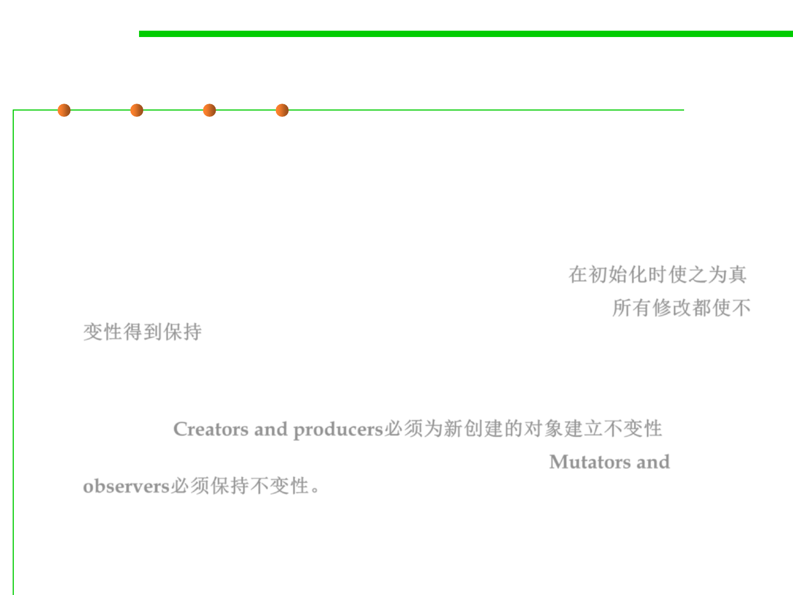

How to establish invariants
3.3 Abstract Data Type (ADT)
▪ An invariant is a property that is true for the entire program – which in
the case of an invariant about an object, reduces to the entire lifetime of
the object.
▪ To make an invariant hold, we need to:
– Make the invariant true in the initial state of the object; 在初始化时使之为真
– Ensure that all changes to the object keep the invariant true. 所有修改都使不
变性得到保持
▪ Translating this in terms of the types of ADT operations, this means:
– Creators and producers must establish the invariant for new object
instances; Creators and producers必须为新创建的对象建立不变性
– Mutators and observers must preserve the invariant. Mutators and
observers必须保持不变性。